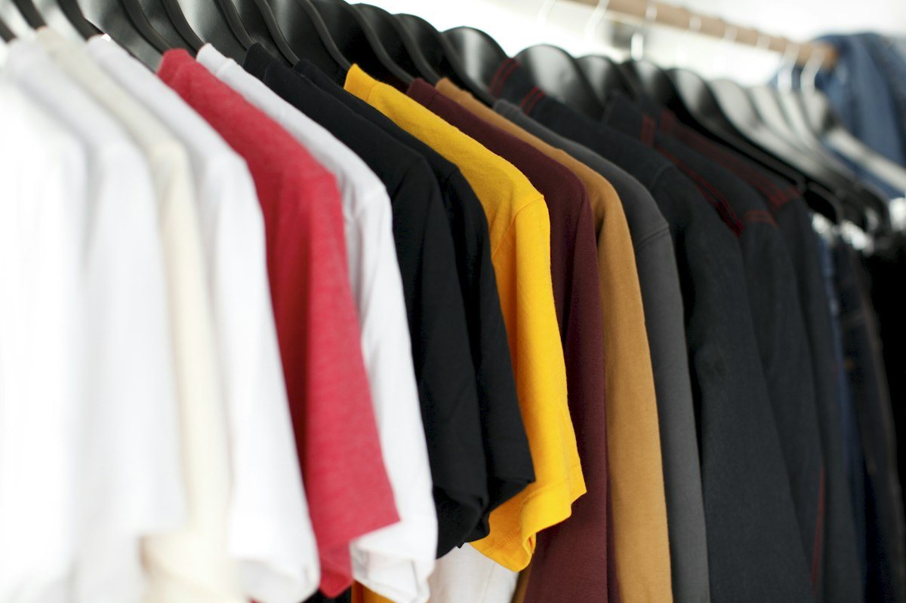
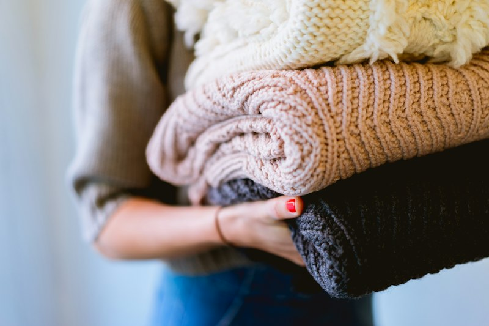
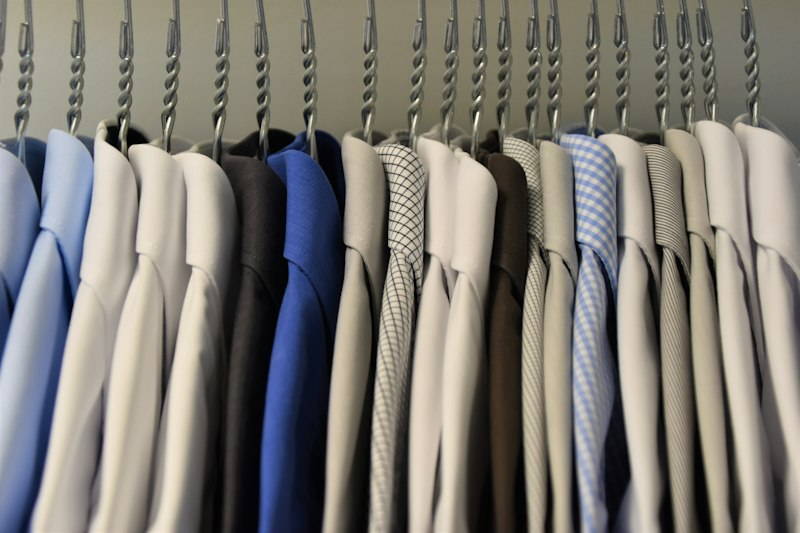
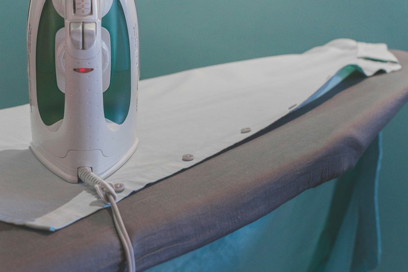
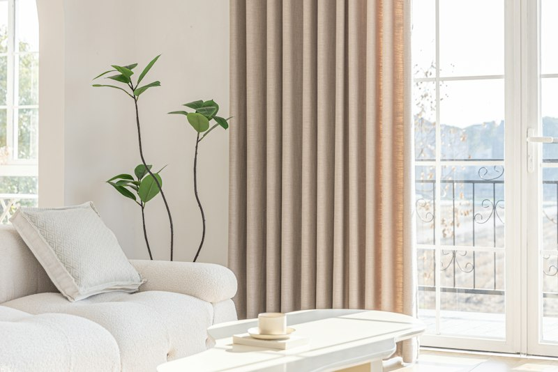
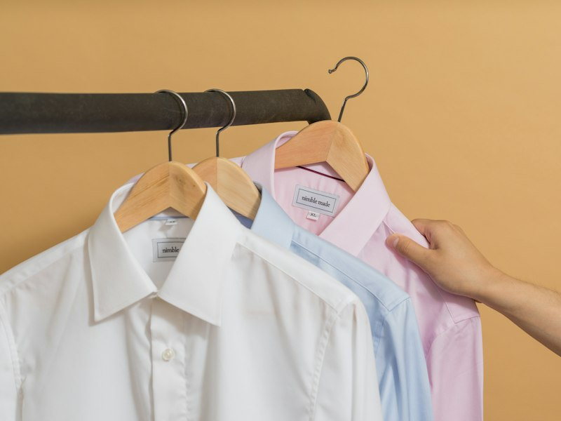

Wash & Fold, Eco Dry Cleaning, Steam Pressing & Drapery
Every garment is evaluated individually, sorted by fiber density, and treated with non-toxic botanical cleaning chemistry to preserve its natural drape, texture, and lifespan.

Our Core Garment Care Services
Carefully engineered washing, dry cleaning, and finishing protocols designed for every item in your home.

Wash & Fold Everyday Laundry
The complete solution for your everyday casual wear, undergarments, workout clothes, towels, and bed linens. We sort lights and darks into separate gentle cycles.
-
Water Chemistry: Cold water ozone sanitization
-
Detergents: Plant-based enzyme detergents & hypoallergenic rinse
-
Finishing: Precision flat folding and compact bundle wrap
-
Turnaround: 24 Hours standard, same-day rush available

Organic Eco Dry Cleaning
Gentle solvent cleaning tailored for delicate silks, fine wools, structured suits, evening dresses, and designer coats. Zero harsh perc odors or stiff residue.
-
Solvent Type: Non-toxic hydrocarbon and liquid silicone
-
Pre-treatment: Ultrasonic hand spotting for oils and tannins
-
Presentation: Heavy-duty contoured wooden hangers with collar guards
-
Turnaround: 48 Hours with fabric inspection report

Artisan Steam Ironing & Hand Pressing
For clients who wash their own clothes but hate the chore of ironing. Our master pressers use Italian steam tension dummies to eliminate every wrinkle without scorching.
-
Equipment: High-pressure vacuum steam tables & velvet mitts
-
Starch Options: None, Light Silk Touch, or Firm Executive Starch
-
Details: Perfect collar rolls, crisp sleeve pleats, cuff alignment
-
Turnaround: 24 Hours

Architectural Curtains & Drapery Care
Heavy window curtains collect airborne dust, allergen particles, and cooking aromas. We clean large panels up to 15 feet in length with zero shrinkage or pleat distortion.
-
Suitable Fabrics: Velvet, linen, blackout thermally-backed, sheer voile
-
Anti-Allergen: Complete dust mite and smoke odor neutralizer
-
Transport: Crease-free vertical mobile wardrobe bars
-
Turnaround: 72 Hours
Our 6-Stage Garment Restoration Protocol
Every single item follows a strict multi-point journey to ensure fiber longevity and maximum cleanliness.
Fiber Check
Care labels and fabric blend composition are scanned and cataloged.
Stain Triage
Stubborn oil, ink, or protein spots receive targeted botanical enzymes.
Custom Wash
Water temperature, drum rotation speed, and ozone dosage are set.
Gentle Tumbling
Moisture sensors prevent over-drying and fiber shrinkage.
Steam Press
Hand-guided steam irons reshape lapels, pleats, and seams.
Final Audit
Buttons checked, threads trimmed, and wrapped in protective covers.
Customize Your Laundry Preferences
Select your preferred scents, starch density, and folding styles directly in your customer portal.

Organic Fragrance Bar
Choose between 100% Hypoallergenic Unscented (safe for eczema & infant skin), Provençal French Lavender, or Crisp Alpine Linen.
No Extra Charge
Starch & Stiffness Control
Pick No Starch for natural relaxed drape, Light Touch for smooth crease resistance, or Executive Heavy Starch for crisp military collars.
Custom Starch Levels
Wardrobe Packaging
Choose your return packaging: Hangers with protective shoulder covers, flat military drawer fold, or space-saving vacuum travel packs.
Zero Single-Use PlasticBulk Linens, Uniforms & Corporate Garment Subscriptions
Are you a restaurant owner needing pristine table linens, a boutique hotel needing hypoallergenic duvet care, or a clinic needing sanitized scrubs? AuraWash delivers dependable commercial laundry with priority logistics.